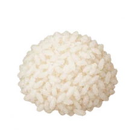
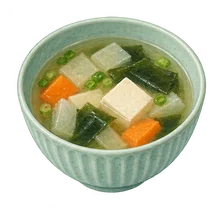
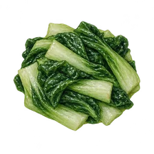
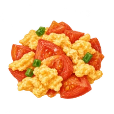
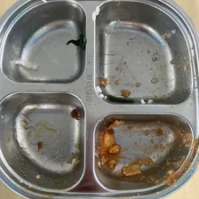

這一餐，我來試試看！
看看菜單、想想份量。吃完留下一張照片，下一餐再來看。
平板快速掃描 QR Code（掃描或直接點圖都能開）
換平板或給同學掃描，直接打開食光偵探與問卷



吃之前
吃完了
下一餐採用 AI 吃飯策略，真實兩餐對照減少 91% 剩食
跟著 AI 推薦的方法（白飯先盛四分之三碗、趁熱先吃三口青菜配排骨，還餓再添飯），實際追蹤兩餐從剩 162 克降到 14 克，剩食減少 91% 且吃得剛剛好飽！

資料線索個人 → 班級 → 全校口味喜好預測與午餐大數據參照庫
- 教育部校園食材登錄平臺（23 天實測資料）
泰北附設國小（第一餐盒）官方登錄熱量（707–905 kcal）、六大類份量、34 張菜色照與全校食材批號進貨重量（KG）。
看教育部熱量與食材重量對照 - 個人 → 班級 → 全校：三層次口味喜好預測與預防剩食
第一層幫個人推薦盛飯比例與吃菜策略；第二層統計全班各道菜平均剩食量；第三層結合全校 23 天教育部實登資料，預測全校對不同口味的喜好度，提前調整菜單、從源頭預防剩食！
看個人到全校口味預測 - 累積校園午餐大數據：40 天菜單，120 則設計的情境參照庫
整合 9、10 月 40 天菜單，120 則設計的情境與配餐紀錄，提供給導師、學校營養師與廚房作為長期開菜單與精準備餐的參照依據。
核對菜單與 AI 配餐策略 - 17 張實拍餐盤 AI 克數辨識與惜食策略庫
收錄 17 張真實餐盤 AI 各格剩食克數辨識（第一餐 162 克 → 第二餐 14 克，剩食減少 91%）與對應吃飯策略。
看吃飯策略與惜食案例 - 全班與全校午餐喜好回饋統計
彙整免登入問卷的用餐飽足感與菜色喜好數據，結合 AI 餐盤克數辨識，建立完整的校園午餐大數據參照庫。
看收到的午餐回饋統計 - 我的餐盤紀錄與真實兩餐前後對照
完整記錄每一餐 AI 辨識克數與吃飯策略，清楚對照兩餐剩食減少成果。
開我的兩餐對照發現

簡報與講稿11 頁學生簡報與 8 分鐘報告＋實機展示講稿（P1–P11）
涵蓋 40天菜單、120則情境、23 天教育部食材登錄實測與 AI 吃飯策略（兩餐剩食減少 91%）。可打開互動簡報播放器聽示範朗讀，或直接點選下方頁碼跳頁：
📋 11 頁簡報標題、8 分鐘報告講稿與實機展示速覽（P1–P11 點擊可直接跳頁）
大家好，我們是泰北國際雙語學校國小部的食光追查隊！我們結合 AI 餐盤辨識、個人化吃飯策略推薦與校園午餐大數據，讓每一餐都吃得剛剛好飽，同時從源頭減少校園剩食！
💻 實機展示（10秒）：另一位隊員在大螢幕打開「食光偵探首頁」與「總入口 QR Code」，讓評審一眼看到完整系統與今日菜單。
我們在學校觀察到三個真實困擾：第一，打菜盛飯憑感覺，白飯盛太滿太快吃飽，結果青菜和排骨吃不下；第二，遇到陌生菜色不敢試，留到最後冷掉更不想吃；第三，過去缺乏 AI 數據追蹤與個人化吃飯策略，導致班級回收桶每天都有好幾公斤廚餘。
💻 實機展示（10秒）：點開「/discover 現場觀察」，快速滑動展示 17 張真實餐盤與班級廚餘回收桶的實拍照片。
因此我們提出四階段研究閉環：第一，餐前怎麼配才剛好？第二，餐後各格剩多少公克？第三，下一餐怎麼吃能減少剩食？第四，累積全班與全校大數據後，如何預測口味喜好、幫學校提前調整菜單預防剩食？
💻 實機展示（10秒）：點開「午餐研究心智圖」或四階段閉環圖，指出從個人配餐到全校大數據的四個研究問題，準備交棒給隊員 B。
我們完整建檔學校 9 月、10 月共 40 天公告菜單，並串接教育部校園食材登錄平臺 23 天官方實登數據，包含每餐 707 到 905 大卡熱量、135 道真實供餐菜色照與 638 筆食材進貨重量，作為 AI 配餐與大數據參照基準！
💻 實機展示（15秒）：點開學校 9–10 月 40 天菜單與「教育部校園食材登錄平臺」23 天實登熱量（707–905 kcal）及 34 張官方菜色照。
吃飯前打開平板點選今日菜色，針對不熟悉或平常較少吃的菜，AI 會自動推薦「第一口嚐鮮搭配法」，例如先夾一小塊香酥魚排配一口香菇高麗菜，並把專屬配餐計畫帶去拍餐盤！
💻 實機展示（20秒）：在「/coach AI 營養配餐教練」現場點選一道今日菜色（如香酥魚排或炒青菜），現場示範 AI 即時給出第一口嚐鮮搭配建議！
打菜前先依當天飢餓程度選擇「小份（3/4 碗）、剛好、或多些」，搭配「趁熱先吃三口青菜與主菜、吃完還餓再去添飯」的策略，找到吃得飽又不剩食的黃金比例！
💻 實機展示（20秒）：在「/game 午餐由我配」現場切換「小份 3/4 碗／剛好」份量設定，並展示「/scan 拍餐盤」上傳介面，講完交棒給隊員 C。
吃完午餐後，我們拍下餐盤，AI 會智慧辨識每一格剩下的克數，像這盤青菜剩 80 克、排骨剩 72 克，合計 162 克。AI 發現是因為先吃白飯太快飽，就會自動推薦下一餐的吃飯策略：白飯先盛四分之三碗、趁熱先吃三口青菜配排骨，還餓再去添飯。
💻 實機展示（20秒）：在「/scan?view=history」現場點選「🧪 3 種校園常見剩食情境模擬器」，展示 AI 如何辨識青菜 80g、排骨 72g（共 162g）並給出三步驟吃飯策略！
我們實際追蹤兩餐來驗證 AI 推薦的吃飯策略！第一餐還沒用策略時，餐後剩下 162 克；第二餐採用 AI 推薦的方法，白飯先盛剛好、先吃青菜配主菜，結果餐後只剩 14 克，剩食減少了 91%，而且肚子吃得剛剛好飽！
💻 實機展示（25秒）：在「/presentation?view=results」指向真實兩餐對照照片：第一餐 plate-06（162g）vs. 第二餐採用 AI 策略後 plate-07（僅剩 14g，減少 91% 剩食）！
食光偵探不只幫個人，還能擴展到班級和全校！第一層幫個人推薦每餐盛飯比例與吃菜策略；第二層統計全班各道菜平均剩食量，找出班上最愛與常剩的菜色；第三層結合全校 23 天教育部食材登錄平臺每餐 707 到 905 大卡資料，預測全校對不同口味的喜好度，提前調整菜單、從源頭預防剩食！
💻 實機展示（20秒）：在「/insights」操作「📊 全校 23 天菜色口味接受度雷達」，現場切換「🔥 人氣王菜色（92%–95%）」與「⚠️ 高剩食風險菜色廚房改良建議」！
當我們累積越多筆紀錄，就會成為超有價值的校園午餐大數據參照庫！我們整合了 40 天公告菜單、23 天教育部實登熱量與進貨重量、17 張實拍餐盤 AI 克數辨識與 120 則配餐情境，不只幫同學吃得剛好，更能提供給導師、學校營養師與廚房作為長期開菜單與精準備餐的依據！
💻 實機展示（20秒）：展示「校園午餐大數據參照庫」三柱總覽（40天菜單×23天實登×17張餐盤×120則情境），說明如何提供給導師、營養師與團膳廚房，準備交棒全員合聲。
總結食光偵探三大成果：AI 智慧判斷剩食並推薦吃飯策略讓剩食減少 91%、個人到班級到全校三層預測預防剩食、以及校園午餐大數據長期參照庫！現在就請評審與同學掃描畫面上的 QR Code，立即體驗食光偵探與填寫午餐問卷！
💻 實機展示（15秒）：全隊微笑指向大螢幕上的「雙 QR Code」，邀請評審拿起手機掃描立即體驗食光偵探與填寫免登入午餐問卷！
🏆 比賽評審必考問答 Q&A 題庫（10 大必考題＋🎯 秒殺金句＋滿分回答速覽）
- AI 技術原理Q1｜AI 怎麼只靠一張餐盤照片就知道剩下幾公克？準確嗎？
🎯 秒殺金句：我們以教育部食材登錄平臺的官方基準重量為錨點，結合視覺 AI 分格面積比例換算克數，並搭配教室電子秤實測校準！
我們結合學校公告菜單與教育部校園食材登錄平臺的官方基準重量（例如白飯滿格約 180g、主菜約 90g、青菜約 85g），讓視覺 AI 先辨識餐盤各格的剩餘面積比例，再換算成公克數；同時標示信心度，並能搭配教室電子秤實測校準！
- 實測證據驗證Q2｜兩餐對照剩食從 162g 降到 14g（減少 91%），是因為菜色不同還是 AI 策略真的有用？
🎯 秒殺金句：這是同一位同學（plate-06 → plate-07）調整「盛飯比例與吃菜順序」後的真實配對追蹤，證實策略改變行為！
這兩餐是同一位同學（plate-06 與 plate-07）的真實追蹤！第一餐因為先吃白飯太快飽，導致青菜剩 80g、排骨剩 72g；第二餐採用 AI 推薦的「白飯先盛 3/4 碗、趁熱先吃 3 口青菜配主菜」，調整盛飯比例與進食順序後，自然吃到只剩 14g 且剛剛好飽！
- 三層預測架構Q3｜個人餐盤紀錄怎麼變成「班級」到「全校」的口味喜好預測？
🎯 秒殺金句：透過「個人配餐 → 班級平均剩食 → 全校 23 天 147 道菜口味雷達」三層架構，提前幫廚房把高風險菜色改成高接受度料理法！
我們設計了三層架構：第一層幫個人調配份量；第二層彙整全班各道菜平均剩食與回收桶紀錄；第三層串接全校 23 天、147 道教育部食材登錄平臺菜色與 120 則情境回饋，發現蒜炒、蛋炒、香酥魚排接受度超過 92%，而單炒苦瓜或冷掉勾芡菜容易剩，能提前幫學校調整菜單！
- 健康與飽足感Q4｜如果同學正在長身體，照 AI 建議先盛 3/4 碗飯會不會吃不飽？
🎯 秒殺金句：食光偵探的原則是「吃得剛剛好飽、保留添飯彈性」，餐後若勾選「還想再吃」，下一餐 AI 會自動調高建議份量！
食光偵探的核心原則是「吃得剛剛好飽、健康零浪費」，絕對不是讓同學挨餓！AI 策略第三步就是「吃完還餓再去添飯或加菜」，而且餐後會勾選飽足感（剛剛好／還想再吃／太撐），若勾選還想再吃，下一餐 AI 就會自動調高建議份量！
- 大數據長期價值Q5｜累積這些校園午餐大數據，對學校營養師和團膳廚房有什麼幫助？
🎯 秒殺金句：將過去籠統的「整桶廚餘重量」升級為「分格菜色克數 × 23 天官方進貨重量（638 筆）」，讓廚房精準備餐、營養師精準改菜單！
過去學校只知道每天廚餘桶總共幾公斤，卻不知道是哪一道菜、哪一種煮法被剩下。我們的「校園午餐大數據參照庫」整合 40 天菜單、23 天實登熱量（707–905 大卡）與分格克數，能幫廚房精準掌握各班備餐量、幫營養師把常剩蔬菜改成受歡迎的料理法！
- 推廣與隱私保護Q6｜其他學校也能用這套系統嗎？同學的資料會不會外洩？
🎯 秒殺金句：全台國中小皆串接教育部食材登錄平臺可一鍵跨校套用，且本機資料庫只存代號不拍臉，兼顧隱私與推廣！
完全可以！全台灣中小學都有串接「教育部校園食材登錄平臺」，只要匯入該校菜單就能使用；而且餐盤紀錄保存在平板本機資料庫（IndexedDB），只使用學號代號、不拍臉部，並支援一鍵匯出 JSON 備份，兼顧隱私安全與跨校推廣！
- 科學誠信邊界Q7｜120 則配餐情境跟 17 張實拍餐盤有什麼不同？你們怎麼區分真實紀錄與模擬資料？
🎯 秒殺金句：我們嚴格落實「資料來源透明化」，將官方實登、真實餐盤實拍與設計模擬情境分開標示、絕不混用！
在系統與簡報中，每一筆資料都有專屬來源徽章：23 天教育部食材登錄平臺（638 筆食材重量）與 17 張校內餐盤／回收桶照片（如 plate-06 → plate-07 減少 91%）標示為「真實實測」；而 120 則跨 40 天菜單的配餐故事則明確標示為「設計情境模擬」，用來測試不同挑食類型的 AI 應對策略！
- 未來展望與落地Q8｜未來食光偵探還可以怎麼升級？如何真正落實到每天的校園午餐？
🎯 秒殺金句：下一步我們將推動「班級每週惜食榮譽榜」與「跨學期菜單 AI 預警系統」，讓惜食成為全校日常習慣！
短期可在各班平板架設「餐後 3 秒拍餐盤角」，每週自動產出班級最受歡迎與最需改良菜色報表給營養師；中長期則能串接跨學期季節菜單，在開立下個月菜單時就由 AI 預警高剩食風險菜色並推薦改良烹調法，從源頭達成校園零廚餘！
- 視覺演算法強健性Q9｜AI 辨識如何克服不同光線、陰影或不同餐盤材質/顏色的影響？會不會在陰暗處就認錯？
🎯 秒殺金句：系統內建自動色溫與對比白平衡校正，且 AI 是依食材多邊形邊緣輪廓與紋理特徵判斷，而非單一顏色，陰影下依然精準！
我們在前端選圖時先進行白平衡與對比度正規化，避免黃光或反光干擾；更重要的是，Google 多模態視覺模型辨識的是食材的邊緣特徵、表面紋理與相對格位配置（例如白飯的米粒顆粒感、排骨的炸粉質地），而非單純靠顏色判定。我們實測 17 張不同時段（陰天、晴天窗邊、教室室內燈）的餐盤照片，皆能穩定辨識！
- 營養科學依據Q10｜AI 推薦的吃飯策略（白飯先盛 3/4 碗、先吃青菜配主菜）有營養學或醫學依據嗎？
🎯 秒殺金句：完全符合「進食順序法（Vegetables & Protein First）」醫學實證，穩定血糖且延長飽足感，自然吃得健康零浪費！
這完全符合現代臨床營養學的「膳食纖維與蛋白質優先（Vegetables & Protein First）」原則！若一開始空腹吃大量精緻白飯，血糖容易快速飆升又驟降，導致太快飽或下午昏昏欲睡；先吃青菜與蛋白質能延緩醣類吸收、穩定血糖曲線並延長健康飽足感。搭配「先盛 3/4 碗、還餓再添」，讓同學在不挨餓的前提下自然吃完、剩食減少 91%！
白飯先盛剛好，趁熱先吃青菜配主菜，還餓隨時再去添飯！透過 AI 智慧餐盤克數辨識與口味喜好預測，一起累積校園午餐大數據參照庫。換平板前可先下載紀錄備份。